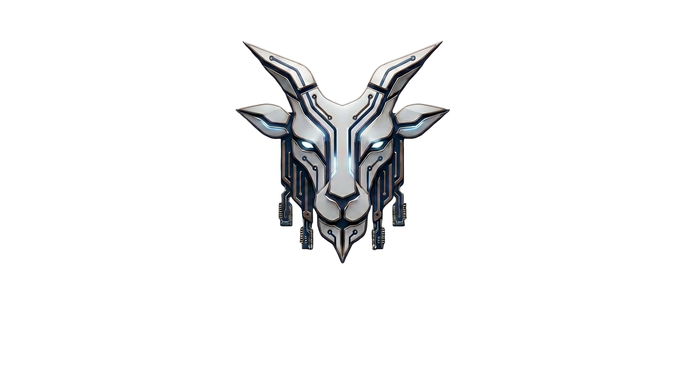

GOATFACE TECH
Independent AI Research · Sundre, Alberta · Est. 2026
Most AI was not designed with children in mind.
Predators reach kids through platforms that were never built to stop them.
We are building the infrastructure that should already exist.
Original architecture. Original ideas.
From a small town in Alberta.
▼ Scroll to explore
Why We Exist
Children today interact with AI systems, social platforms, and online games that were not designed with their safety as a primary concern.
Predators use these platforms because they offer scale, anonymity, and cross-platform reach that physical-world predation never had. Grooming patterns that used to take months in person can now happen in days through chat-based tools.
The burden of protection has fallen entirely on individual parents, who are expected to monitor every platform and every conversation, with no infrastructure to support them.
That is not sustainable. It is also not fair. Most parents are not equipped to identify grooming patterns in real time, and they should not have to be.
We build the infrastructure
that should already exist.
Active Projects
AI Architecture
NCI
Native Compression Intelligence. An original AI architecture built around knowledge graphs and semantic compression. Designed to run on hardware ordinary families already own. No GPU. No cloud. No subscription.
Live · Session 30+Language
Terse
A programming language designed for AI systems from day one. Reads like English. Compiles to native machine code via LLVM. The language that makes silicon ethics enforcement possible.
In DevelopmentFirst Product
Goatface Ethics Appliance
A network appliance built for households, schools, and small organizations. It brings the NCI Ethics Engine to the AI services and online platforms where children spend their time. It detects predatory patterns. It enforces parent-configured profiles. It preserves evidence in admissible form when something crosses the line. Works without a subscription, without a cloud account, and without trusting any AI service to police itself.
In DevelopmentSilicon · Future
NCI Ethics Core
A dedicated hardware chip that executes Terse ethics rules in silicon. Ethics written in code, enforced in hardware. You can't jailbreak silicon. Software ethics layers can be disabled, modified, exploited, or forged. Silicon cannot be any of these. Designed for the cases where the answer is non-negotiable — where no parent, no vendor, no user, and no software exploit should ever be able to turn the rule off.
Planned · Phase 6The Long Path
Detection in the home is the first step. The longer goal is to contribute meaningfully to the prosecution of predators — not just to block their messages from reaching individual children.
Technology is rarely the limiting factor in this work. Legal authority, evidence-chain integrity, and jurisdictional coordination are. The right path runs through formal partnerships with established child-safety organizations.
We are committed to doing this work the right way, because predators going free on technicalities is not an acceptable outcome.
The Three Laws of Terse
"Knowledge is not stored, it is organized. Retrieval is not lookup, it is reconstruction."
"Capability is not authorization."
"The compiler works harder so you don't have to."
Stay Connected
For Followers
Updates on the project, the technology, and our work toward shipping the first product. Low frequency. No spam.
Join the newsletter →For Parents
Be first to know when the Goatface Ethics Appliance ships. Early access for families on the waitlist.
Join the waitlist →